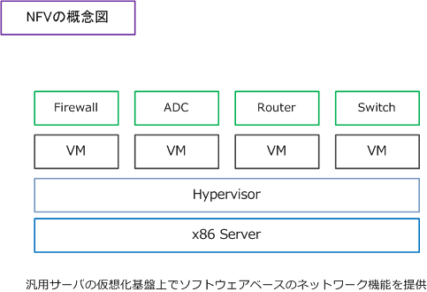
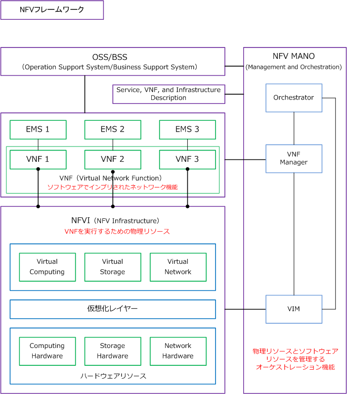
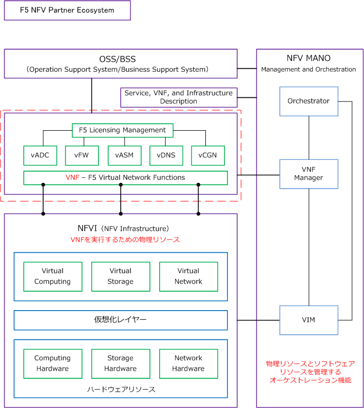

NFV ( Network Functions Virtualization )
NFV（Network Functions Virtualization）とは
NFVとは、ネットワーク機器の機能を汎用サーバの仮想化基盤上でソフトウェア（仮想マシン）として実装 する方式のことです。NFVはSDNとは異なる技術です。SDNがネットワーク機器のコントロールプレーンと データプレーンを分離するのに対して、NFVは「ネットワーク機器（アプライアンス製品）の機能をソフト ウェアとして提供」しようという考え方になります。NVFは、SDNを補完するような関係にあります。
NFVは「サーバ仮想化技術」をネットワーク機器に応用した技術であり、ルータ、スイッチ、ADC、Firewall などの専用機器を、汎用サーバ上の仮想化基盤の仮想マシンとして動作させることで、専用機器を代替します。 NFVの導入により物理的な機器の集約を行えることから設備や運用コストを低減させることができます。なお このNFVのフレームワークは非常に複雑なのですが、簡単な概念図は下図の通りとなります。

次に、NFVの詳細なフレームワークを見てみましょう。

NFV（Network Function Virtualization）のフレームワークにおいて、ネットワークエンジニアとして特に 意識すべきは、VNF（Virtual Network Function）部分です。ここに、各ベンダーのVNF製品が導入される ことになります。例えば、F5製品を導入する場合には下図のような概念図が適用できます。

Cisco VNFs（Virtual Network Function）のサンプルリストも確認してみましょう。
| カテゴリ | 製品 |
|---|---|
| Networking | CSR1000V、XRv |
| Security | ASAv、WSAv、ESAv、vFirePOWER、vISE |
| Services | NetScaler1000v、vNAM、vWaaS、CUCM |
| vSwitch | Nexus1000v |
| Controllers | vWLC、vMSE、APIC、APIC-EM、WAE |